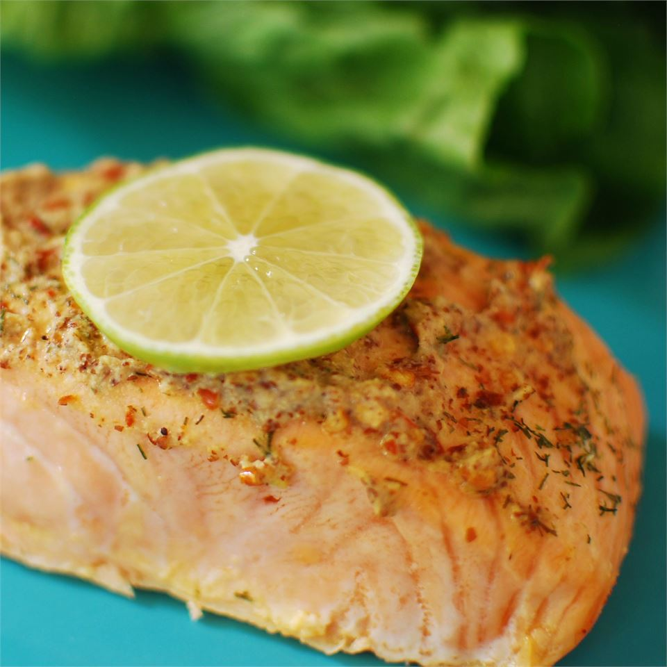

Spicy Salmon Garlic

Description
This is an unbelievably delicious and quick salmon recipe. You can play
around with the ingredients: add fresh basil leaves instead of the chili
or balsamic instead of the lemon juice. The wholegrain mustard is
essential. You are guaranteed to love this one! Serve with a green salad,
and enjoy!
Ingredients
- 2 garlic gloves
- 1 dried red chile pepper
- 1 tablespoon olive oil
- 1 tablespoon whole grain mustard
- 2 tablespoons fresh lime juice
- Sea salt to taste
- Freshly ground pepper
- 2 (6 ounce) fillets salmon
Steps
-
Preheat oven to 400 degrees F (200 degrees C). Line a medium baking dish
with aluminum foil. Lightly grease foil.
-
With a mortar and pestle, grind together the garlic, chile pepper, and
olive oil. Mix into a thick paste with the mustard, lime juice, salt,
and pepper. Place the salmon fillets in the prepared baking dish, and
coat with the paste mixture.
-
Bake salmon 12 to 15 minutes in the preheated oven, or until fish is
easily flaked with a fork.
Return to Main Page